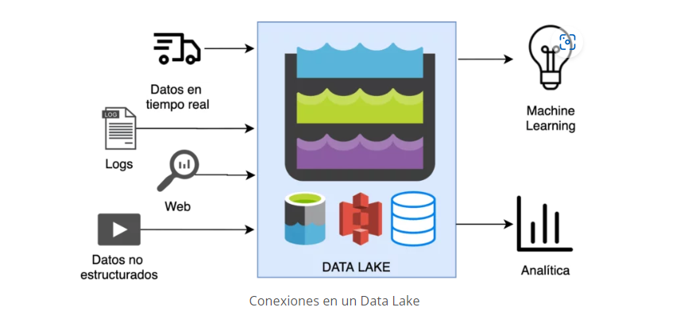
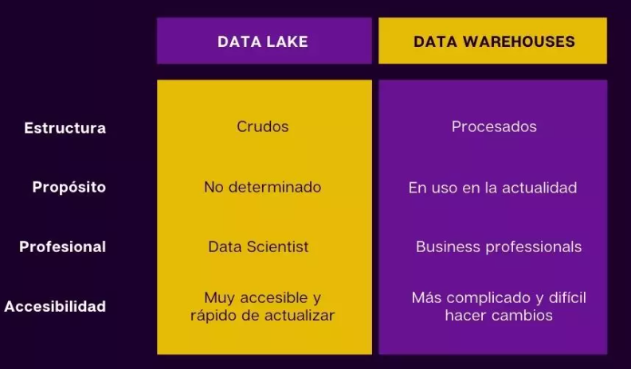
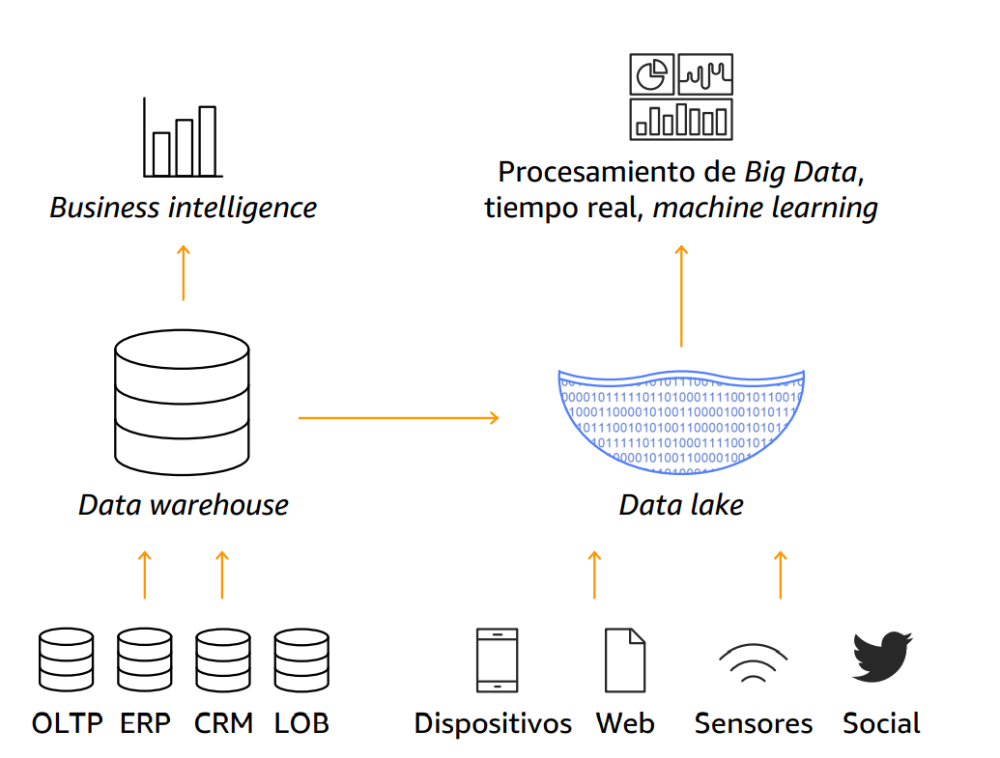

7. DATA LAKE
Data Lake¶
Un data lake o lago de datos es un repositorio centralizado que permite almacenar, compartir, gobernar y descubrir todos los datos estructurados y no estructurados de una organización a cualquier escala. Es el lugar en el que se vuelcan los datos en bruto.
Los data lakes no requieren un esquema predefinido, se pueden almacenar y procesar datos sin esquema y en cualquier formato sin la necesidad de conocer cómo se van a explotar en el futuro. Esta característica evita que sean necesarios complejos procesos ETL (Extracción, Transformación y Carga) de limpieza y preparación.

Data Lake VS Data Warehouse ¶
-
Los Data Warehouses son más lentos y complejos de implementar que los Data Lakes.
-
El Data Lake permite tener una gran capacidad de almacenamiento de datos estructurados, semi-estructurados y no estructurados.
-
En cuanto al procesamiento de datos, los Data Lakes suelen necesitar un servicio separado como Spark. Los Data Warehouses aportan este servicio de procesamiento.

Ventajas de un Data Lake ¶
-
Data Lake ofrece a los usuarios comerciales acceso inmediato a todos los datos.
-
Los Data Lake no se limitan a relacionales o transaccionales Con un Data Lake, nunca necesitará mover los datos.
-
Data Lake empodera a los usuarios empresariales y los libera de los lazos del dominio de TI.
-
Data Lake acelera la entrega al permitir que las unidades de negocios pongan en marcha las aplicaciones rápidamente.
-
Ayuda completamente con la producción y la analítica avanzada.
-
Ofrece escalabilidad y flexibilidad rentables.
-
Ofrece valor a partir de tipos de datos ilimitados.
-
Reduce el costo de propiedad a largo plazo.
-
Permite el almacenamiento económico de archivos.
-
Rápidamente adaptable a los cambios.
-
La principal ventaja del lago de datos es la centralización de diferentes fuentes de contenido.
-
Los usuarios, de varios departamentos, pueden estar dispersos por todo el mundo y pueden tener acceso flexible a los datos.

Estructura de un Data Lake - Zonas ¶
No existe un modelo único de como estructurar un Data Lake, cada organización tendrá su propio conjunto de requisitos únicos. Un enfoque simple puede ser comenzar con algunas zonas genéricas (o capas).
- Raw / Bronze
Esta capa es un depósito que almacena datos en su estado original, sin filtrar ni limpiar. Puede optar por almacenarlo en formato original (como json o csv) pero puede haber escenarios en los que tenga más sentido almacenarlo en formatos comprimido y más eficientes como avro, parquet o Databricks Delta Lake. Estos datos siempre son inmutables; deben bloquearse y autorizarse como de solo lectura para cualquier consumidor (automatizado o humano). La zona se puede organizar usando una carpeta por sistema de origen, cada proceso de ingestión tiene acceso de escritura solo a su carpeta asociada.
- Cleansed / Silver
La siguiente capa se puede considerar como una zona de filtración que elimina las impurezas, pero también puede implicar un enriquecimiento. Las actividades típicas que se encuentran en esta capa son la definición de esquemas y tipos de datos, la eliminación de columnas innecesarias y la aplicación de reglas de limpieza. La organización de esta zona suele estar más impulsada por el negocio que por el sistema de origen; por lo general, podría ser una carpeta por proyecto. Algunos pueden considerar esta capa como una zona de prueba. Si los analistas de datos o los científicos necesitan acceder a los datos en esta capa, se les podría otorgar acceso de solo lectura.
- Curated / Gold
Esta es la capa de consumo, que está optimizada para análisis en lugar de ingesta o procesamiento de datos. Puede almacenar datos en data marts desnormalizados o esquemas en estrella. El modelado dimensional se realiza preferiblemente utilizando herramientas como Spark o Data Factory. Esta capa puede considerarse como la única fuente de verdad. Sin embargo, no espere que esta capa sustituya a un data warehouse. Por lo general, el rendimiento no es adecuado para dashboards o análisis interactivos. Es más adecuado para analistas internos o científicos de datos que desean ejecutar consultas ad hoc a gran escala, análisis o analíticas avanzadas que no tienen necesidades estrictas de informes urgentes. Como los costos de almacenamiento son más bajos en el DL que en el DW, puede ser más rentable mantener datos granulares y de bajo nivel en el DL y almacenar solo datos agregados en el DW. Los activos de datos en esta zona suelen estar muy bien gobernados y bien documentados. El permiso generalmente se asigna por departamento o función y se organiza por grupo de consumidores o por data mart.
- Laboratory
Esta es la capa donde ocurre la exploración y la experimentación. Aquí, los científicos, ingenieros y analistas de datos son libres de crear prototipos e innovar, combinando sus propios conjuntos de datos. Esto es similar a la noción de análisis self-service que es útil durante la evaluación inicial. Esta zona no sustituye a un DL de prueba o desarrollo, que sigue siendo necesario para actividades de desarrollo más rigurosas que siguen un ciclo de vida de desarrollo de software típico. Cada usuario, equipo o proyecto del DL tendrá su propia área de laboratorio a través de una carpeta, donde podrá prototipar nuevos conocimientos o análisis, antes de que se acuerde formalizarlos y operacionalizarlos a través de jobs automatizados. Los permisos en esta zona suelen ser de lectura y escritura por usuario, equipo o proyecto.
¿Cómo se puede implementar un Data Lake? ¶
Un Data Lake se puede implementar de dos maneras:
-
Data Lake Local (On Premise): implementado en "servidores propios", es decir, la propia empresa es la que se debe encargar de tareas que van desde la compra de software, instalación de hardware y software, hasta el paso de producción y mantenimiento.
-
Data Lake Cloud: tiene la ventaja de que se disminuyen los tiempos de configuración y adminitración. Sin embargo, antes de contratar este servicio, es recomendable definir cuántos datos vamos a almacenar y su tasa de crecimiento estimada. Esto nos permitirá organizar de mejor manera el aumento del tamaño y como consecuencia prevenir el quedar cortos en algún punto de los proyectos.